Pipeline SQL + Python de bout en bout sur 1 115 magasins et ~588 000 utilisateurs : prévision des ventes (SARIMA vs Prophet) et test A/B d'une campagne marketing, restitués dans un dashboard Streamlit End-to-end SQL + Python pipeline across 1,115 stores and ~588,000 users: sales forecasting (SARIMA vs Prophet) and a marketing A/B test, delivered through an interactive Streamlit dashboard
Voir la documentation complète (PDF) View Full Documentation (PDF)
Une enseigne retail multi-magasins veut anticiper ses ventes à court/moyen terme pour mieux piloter stocks et staffing, et évaluer statistiquement une nouvelle initiative marketing avant de la déployer à grande échelle. J'ai reproduit ce cas d'usage sur deux jeux de données réels et indépendants : 1 115 magasins Rossmann (ventes journalières 2013-2015) et ~588 000 utilisateurs exposés à un test A/B marketing. A multi-store retailer wants to anticipate sales short/mid-term to better plan inventory and staffing, and to statistically evaluate a new marketing initiative before rolling it out at scale. I reproduced this use case on two real, independent datasets: 1,115 Rossmann stores (daily sales 2013-2015) and ~588,000 users exposed to a marketing A/B test.
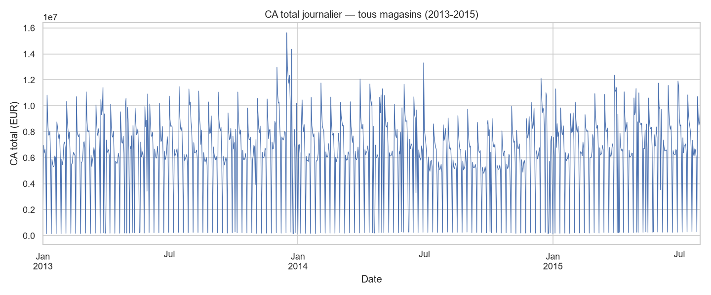
Chiffre d'affaires total journalier — forte saisonnalité hebdomadaire et variations liées aux jours de fermeture Total daily revenue — strong weekly seasonality and variations tied to store closures
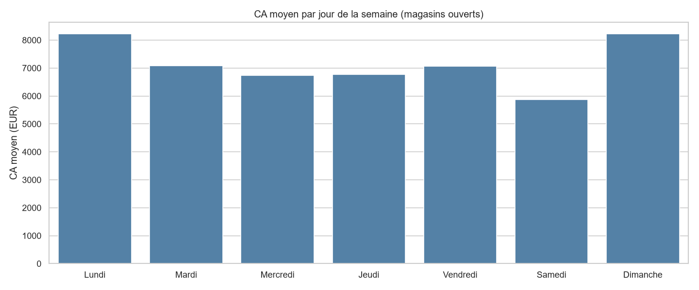
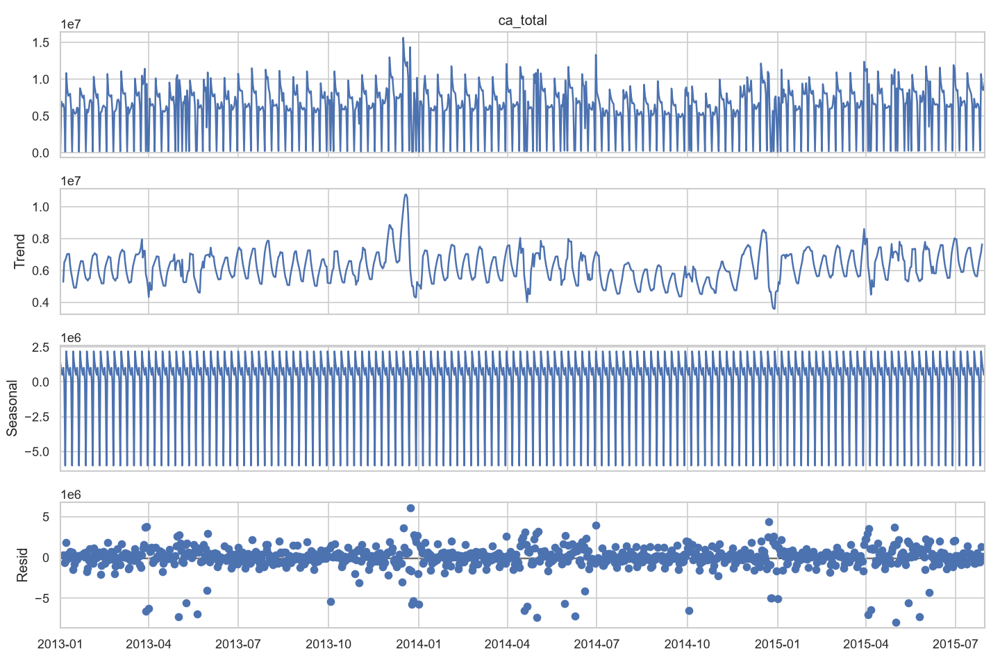
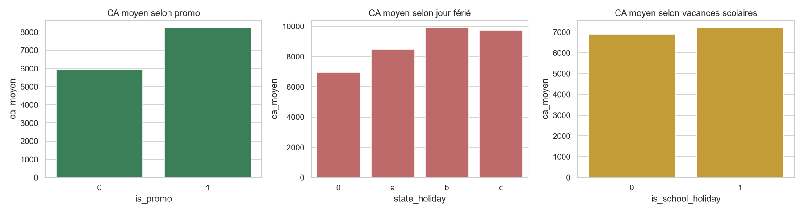
Deux familles de modèles de séries temporelles entraînées et comparées sur 3 magasins représentatifs (fort / moyen / faible volume), évaluées sur un jeu de test out-of-time avec intervalles de confiance à 95%. Two time-series model families trained and compared on 3 representative stores (high / medium / low volume), evaluated on an out-of-time test set with 95% confidence intervals.
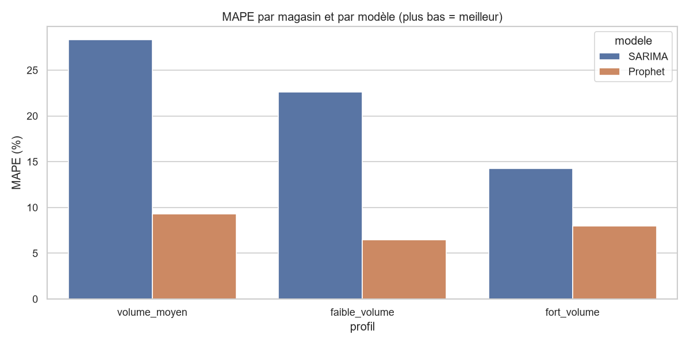
Prophet retenu : gain de 6 à 19 points de MAPE selon le magasin
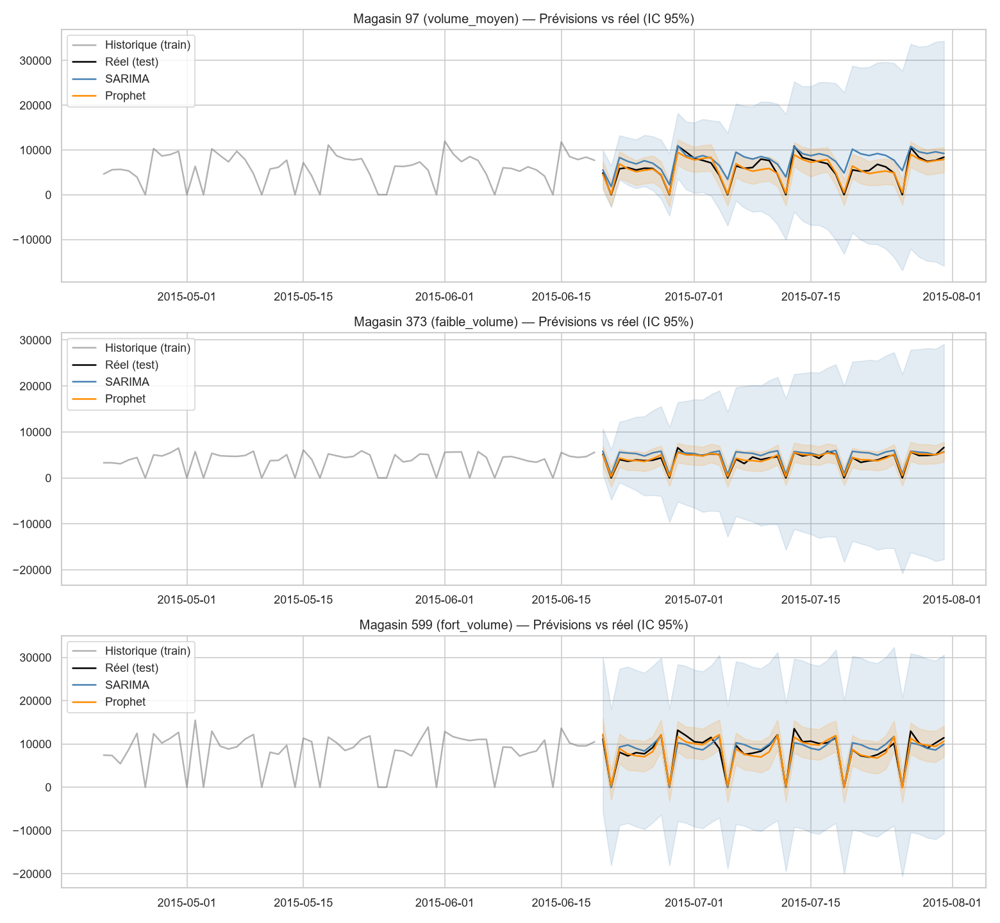
Sur ~588 000 utilisateurs répartis entre un groupe exposé à une publicité et un groupe témoin (message neutre), un test statistique (t-test / Chi²) quantifie l'effet réel de la campagne avant tout déploiement à grande échelle. Across ~588,000 users split between an ad-exposed group and a control group (neutral message), a statistical test (t-test / Chi²) quantifies the campaign's real effect before any large-scale rollout.
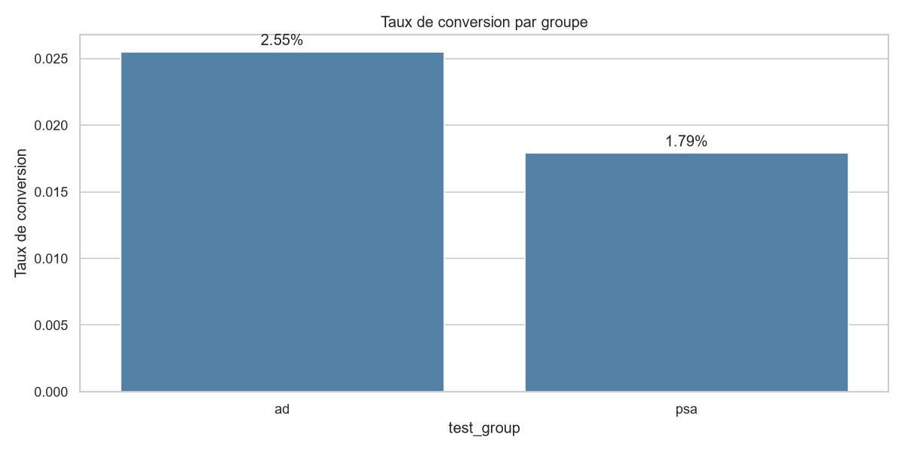
Taux de conversion par groupe — écart de +43,1% en faveur de la publicité (test du χ², p = 2,0e-13) Conversion rate by group — +43.1% lift in favor of the ad (χ² test, p = 2.0e-13)
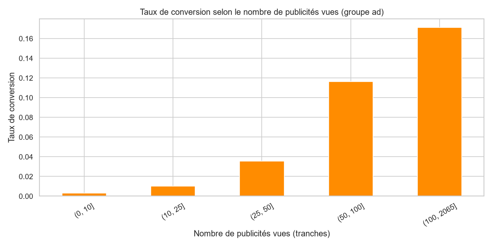
Taux de conversion selon le nombre de publicités vues (groupe publicité) Conversion rate by number of ads seen (ad group)
Application Streamlit à 3 onglets, connectée en direct à la base DuckDB et aux résultats des notebooks — aucune donnée statique, tout est recalculé au vol selon les filtres. 3-tab Streamlit app, live-connected to the DuckDB database and notebook outputs — nothing static, everything recomputed on the fly from the filters.
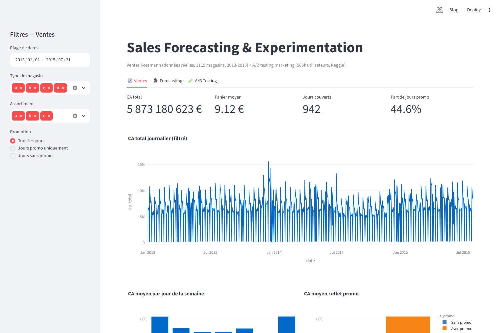
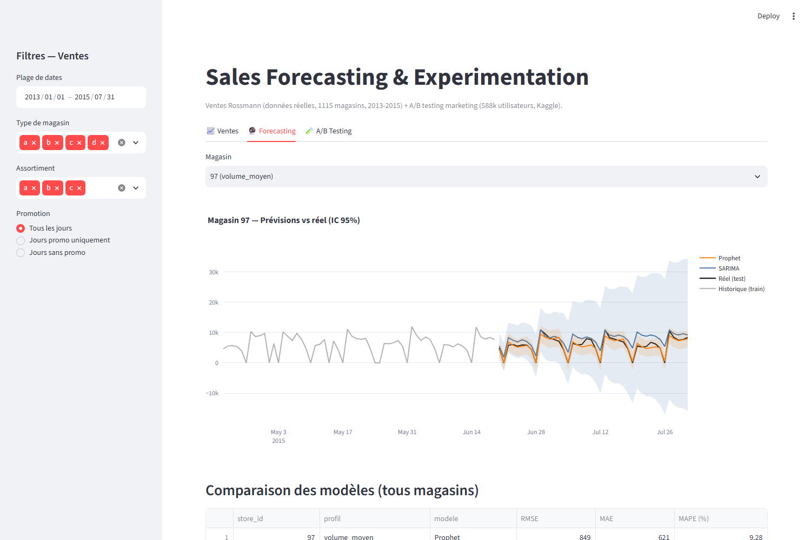
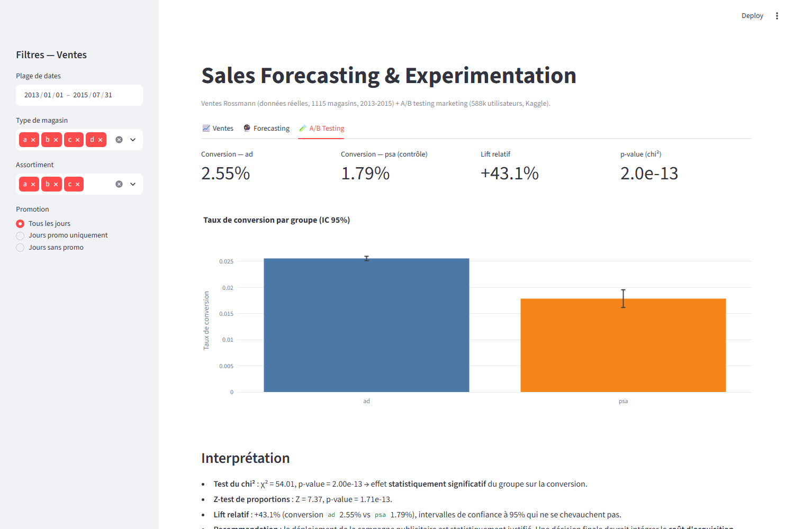
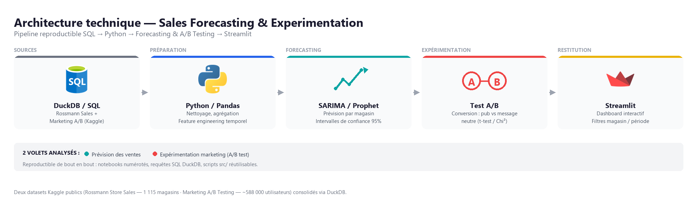
Pipeline reproductible : notebooks numérotés, requêtes SQL DuckDB, scripts src/ réutilisables Reproducible pipeline: numbered notebooks, DuckDB SQL queries, reusable src/ scripts
 Python / Pandas
Python / Pandas
 Streamlit
Streamlit
Prophet réduit le MAPE de 6 à 19 points vs SARIMA selon le magasin, avec des intervalles de confiance mieux calibrés. Prophet cuts MAPE by 6 to 19 points vs SARIMA depending on the store, with better-calibrated confidence intervals.
La campagne publicitaire génère +43,1% de conversion relative (2,55% vs 1,79%), validé par test du χ² (p = 2,0×10⁻¹³). The ad campaign drives a +43.1% relative conversion lift (2.55% vs. 1.79%), validated by a χ² test (p = 2.0×10⁻¹³).
Application Streamlit interactive pour explorer prévisions et résultats A/B, sans dépendance à un outil BI propriétaire. Interactive Streamlit app to explore forecasts and A/B results, with no dependency on a proprietary BI tool.